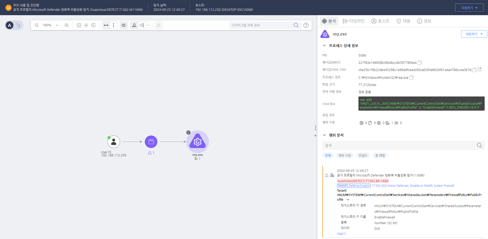

T1562.004.02 시스템 방화벽 비활성화
D3FEND
MITRE ATT&CK 액션을 기준으로 대응 방안을 작성
Detection
모니터링을 통해 "EnableFirewall" 레지스트리 값을 수정하는 행위를 탐지합니다.
Detection(EDR)

https://172.18.10.125:8903/#/analysis/alert/66f389c5002dc79600000234
Response
공격자가 생성한 레지스트리 키를 삭제합니다.
Mitigations
보안 기능의 무결성 보호 (M1040 - Security Configurations)
- 보안 기능(예: 실시간 보호, 로그 기록, 방화벽 설정)을 자동으로 복구할 수 있도록 설정하여 비활성화 시도가 발생하면 자동으로 재활성화되도록 구성
- 보안 설정 보호를 통해 기본 보안 기능(예: 방화벽, 침입 탐지 시스템)이 해제되거나 비활성화되지 않도록 방지
- 보안 기능의 변경이나 비활성화가 발생했을 경우, 즉시 알림을 받을 수 있도록 설정하여 빠르게 대응
서비스 및 기능에 대한 강력한 액세스 제어 (M1045 - Restrict Access to Tools)
- 보안 기능을 비활성화할 수 있는 관리자 권한을 최소화하고, 불필요한 사용자가 보안 설정에 접근하지 못하도록 제한
- 다단계 인증(MFA)을 적용하여 보안 기능을 변경하거나 비활성화하는 권한을 제한하고, 승인된 사용자만 기능을 수정할 수 있도록 설정
- 보안 기능에 대한 수정 권한을 권한을 가진 사용자로 제한하고, 기능 변경에 대한 로그를 기록하여 모니터링
보안 로그 및 경고 시스템 강화 (M1033 - Process Monitoring)
- 보안 기능(예: 로그 기록 기능)이 비활성화되었거나 중지되었을 때 이를 실시간으로 모니터링하고, 경고 시스템을 통해 즉시 알림을 받도록 설정
- 시스템 로그와 보안 이벤트를 실시간으로 분석하여 보안 기능이 변경되거나 비활성화된 경우 이를 추적하고 기록
- 비정상적인 변경을 모니터링하는 도구를 사용하여 보안 기능의 비활성화를 탐지하고 신속하게 대응할 수 있도록 설정
보안 패치 및 업데이트 관리 (M1047 - System Logging & Monitoring)
- 보안 기능의 패치가 최신 상태로 유지되도록 자동 패치 관리 시스템을 설정하여 보안 취약점이 빠르게 해결되도록 관리
- 보안 기능에 대한 패치 이력을 기록하고, 패치와 업데이트가 제대로 적용되었는지 점검
- 보안 업데이트를 정기적으로 확인하여 보안 기능의 최신 상태를 유지하고, 패치가 제대로 적용되지 않은 경우 이를 경고
파일 무결성 검사 및 디지털 서명 검증 (M1055 - Secure Data Transmission)
- 보안 기능에 사용되는 파일과 구성 요소에 대한 무결성 검사를 진행하여 변경된 파일을 탐지하고, 이를 복구할 수 있도록 설정
- 디지털 서명 및 파일 무결성 검증을 통해 보안 기능이 변조되었는지 확인하고, 무단으로 수정된 파일을 자동으로 복원
- 보안 기능의 코드와 구성 파일이 변경되지 않도록 보호하고, 보안 기능이 변조된 경우 이를 즉시 알림
침해 사고 대응 계획 (M1031 - Network Segmentation)
- 보안 기능의 비활성화가 탐지되었을 때 즉시 대응할 수 있도록 침해 사고 대응 계획을 사전에 정의
- 비정상적인 보안 기능 변경에 대응하기 위한 복구 절차를 마련하고, 모의 훈련을 통해 침해 사고에 대한 대응 능력을 향상
- 침입 탐지 시스템(IDS)과 침입 방지 시스템(IPS)을 설정하여 네트워크에서 비정상적인 트래픽을 탐지하고, 보안 기능의 비활성화 시도를 실시간으로 차단
Affected Techniques
Action 실행시 함께 영향을 받는 다른 Techniqes
| D3FEND |
| D3-FRM Firewall Rule Modification |
| D3-FD Firewall Disable |
| D3-FIM File Integrity Monitoring |